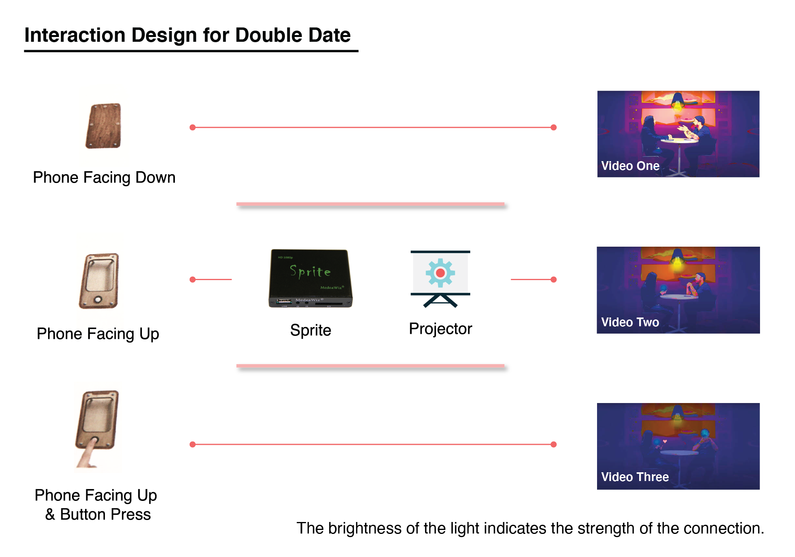

Double Date - Video Sculpture
An interactive video installation about attention between devices and people.
Highlights
I fabricated the controller and programmed it with a media controller Sprite for the interaction.
Tools: Arduino, Sprite, Projector, Laser-Cutter, After Effects, Premiere, Illustrator
Skills: Projection, Experience and Interaction Design
Time: Jan. 2020
Problem Statement
How might we make people aware of their relationships with loved ones and their phones?

Concept
Instant gratification from phones seems to be more tempting than being present at face-to-face conversations. With constant access to the world in our pockets, where should we direct our attention while trying to be present in the moment?
Role
- Developer
- Fabricator
- Post-production
Research
Most of us are guilty of being distracted by our phones during face-to-face conversations. Yet it seemed to be embedded in our culture. Even when we are not using our phones, we are being distracted. (link)
We want to point out the digital culture of the phone in the form of interactive video sculpture to make people more aware of their relationships with loved ones and their phones.
Ideation/Exploration
During our brainstorming process, we had several ideas, most of which are involved with people being controlled by the things they own.
Our goal is to create a portraiture in the form of interactive video sculpture. We then focused on telling a story of a modern relationship between people and their phones.
Inspirations:
We then thought of using light as a way of representing the strength of their connection.
- When a couple is engaging in conversations, the light above them is bright.
- When one is looking at the phone, the light is half bright.
- When both are looking at the phones, the light dims.
Development
We wanted to show how human interactions would change the relationship for the people in the video. For our concept, using a phone is very intuitive as the interaction device for the user. Different interactions such as swiping, picking the phone up, would indicate changes in the relationship depicted in the videos.
Determine the interaction:
- phone face down → play video one of the couple having a great time
- phone is flipped to face up → play video two of the girl playing on the phone
- button is pressed → play video three of the couple on the phones, giving attention to the digital others
Determine the presentation form:
The video footage of the couple was created by Dina and Patrick. The background of the video was influenced by the following image from a game called the Red Strings Club.
We then created a modern dating environment using after effects as shown below.

Still from video one when the couple is having a good time chatting.
Videos for Interactions
Dina and Patrick worked on filming and after effects to illustrate the idea.
Refinement and Testing
Programming & Fabrication
As the creative technologist in the team, I compiled the code for our hardware in Arduino, fabricated the phone/enclosure for the electronics, and worked with Sprite MedeaWiz (a triggered video repeater for compact video projection).
We chose to work with Sprite for our project for several reasons:
- It is compact for physical installation
- It can be controlled by Arduino
For the code, I used the Accelerometer and Arduino Uno to determine if the phone is up or down. I added the button as another condition to trigger the third video.
You can look at my code here . I used the library for the accelerometer Arduino_LSM6DS3.h
I fabricated the phone which functions as an enclosure as well using plywood and standoffs as below. I designed the phone in Illustrator and laser cutted it and assembled the pieces.
Solution
Here is our take on how a modern relationship between a couple is portrayed.
Special thanks to Patrick Warren, Dina Khalil, and Hyunseo Lee.